It's a bird, it's a plane, it's... a problem
Bird strikes at New York area airports on the rise
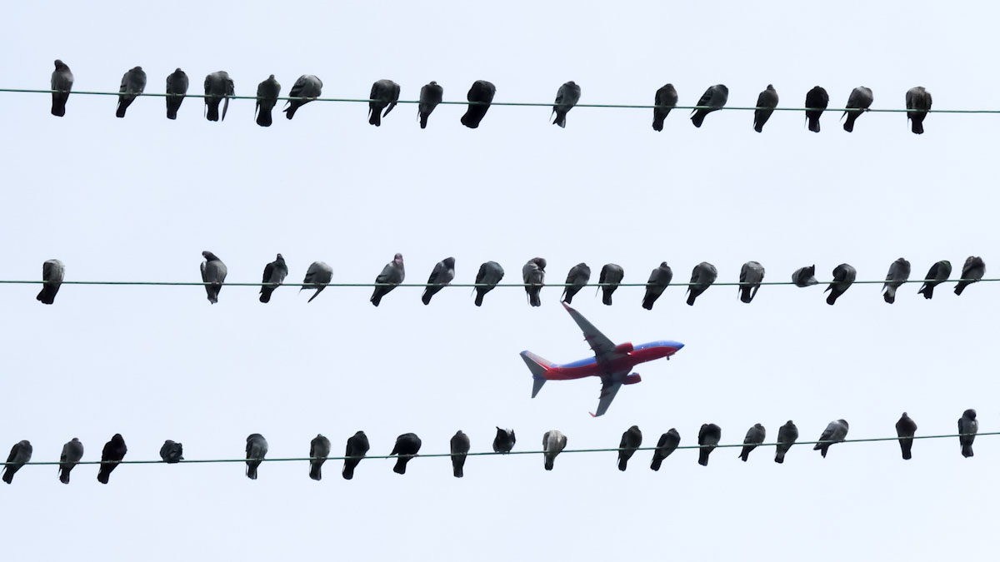
A plane hits a bird nearly once per day at Port Authority airports.
Flickr/ingridtaylar
Shortly after taking off from Westchester County Airport this March, a JetBlue airplane was forced to make an emergency landing after it barrelled into a flock of seagulls. The plane landed safely at John F. Kennedy International, and its passengers, though rattled, were able to catch a later flight to Miami.
News of the emergency landing sparked memories of 2009's “Miracle on the Hudson," when a U.S. Airways pilot was forced to crash land his plane into the New York river after a flock of Canadian geese flew into the plane's engines, fatally disabling the plane’s ability to fly.
Media coverage may make such bird strikes seem rare, but similar occurrences are common. When you’re sitting on the plane waiting for take-off, bird strikes may not be your first concern, but airports across the U.S. are investing millions each year into “wildlife management programs” to prevent another miracle on the Hudson.
The Federal Aviation Administration and U.S. Department of Agriculture are taking measures to ensure the safety of passengers. The FAA has invested in avian radar systems to detect and track birds around airports. Additionally, the USDA employs “wildlife biologists” to find more efficient ways to manage airport environments, even if that means killing birds and small mammals. Despite these precautions, the frequency of bird strikes has risen in recent years.
At the six airports owned by the Port Authority of New York and New Jersey – John F. Kennedy, LaGuardia, Newark Liberty, Teterboro, Atlantic City and Stewart – bird strikes have increased since 1990. Even taking into account the increase in the number of flights, the birdstrike rate has jumped notably.
Birdstrike Rate Quadruples Near NY-area Airports
Birdstrikes per 100,000 Takeoffs/Landings at All Port Authority Airports, 1990-2013
SOURCE: Federal Aviation Administration
Michael Begier, national coordinator of the airport wildlife hazards program at the USDA, said that although the number of damage-causing bird strikes has decreased during the past two decades, the number of reported bird strikes has gone up. According to FAA data, the number of strikes reported annually in New York City increased 337% between 1990 and 2013 (this figure takes into account the growth in air traffic between these years).
According to the FAA, bird strikes are increasing for three key reasons. The populations of many large bird species have burgeoned as a result of adaptation to urban areas as well as airports. Alongside the expanding bird population, plane flights have increased in frequency as well from 310 million flights in 1980 to 725 million in 2012.
Curiously, advancements in plane technology have also contributed to high bird strike rates. More recently constructed planes have two engines, instead of three or four like in the past. This means that, “in the event of a multiple ingestion event, aircraft with two engines may have vulnerabilities not shared by their three or four engine-equipped counterparts,” claims a recent FAA report. Furthermore,“research has indicated that birds are less able to detect and avoid modern jet aircraft with quieter turbofan engines than older aircraft with noisier engines.”
In New York City’s metropolitan area, bird strikes occur nearly once a day (0.9 times) on average. Across the nation’s 19,000 airports, avian strikes happen nearly 30 times a day on average. With New York’s three primary airports located near large wildlife reserves and wetlands, planes are at a high risk of migratory birds, such as those that struck US Airways Flight 1549.
JFK Leads Rising Tide of Bird Strikes at P.A. Airports
Yearly Birdstrikes at Port Authority Airports, 1990-2013
SOURCE: Federal Aviation Administration
Birdstrikes have increased at all Port Authority airports, but John F. Kennedy's wide lead is striking. One factor that contributes to JFK's high rate is its higher volume of air traffic, but flights at JFK are perhaps further prone to birdstrikes because the airport's runways are directly in front of the Jamaica Bay Wildlife Refuge, an internationally-recognized Important Bird Area. Water fowl like gulls and geese nest in the marshlands that surround the airport, and predatory species like kestrels hunt prey over JFK's open fields.
JFK's placement next to such a vibrant avian habitat “is obviously a fundamental conflict,” Tod Winston, communications manager for the New York City Audubon Society, said in an email.
Although the number of bird strikes is small compared with the daily number of flights in the New York City region, the hidden costs of strikes are underestimated. According to the Federal Aviation Administration (FAA), wildlife strikes delay planes for about 600,000 hours annually on average. Additionally, the cost of delays and plane damage amounts to nearly $1 billion per year on average, though less than 10 percent of planes sustain damage.
Particularly costly years include 1995 and 2009, amounting to total costs of $3.68 billion and $2.44 billion respectively. In those years, significant bird strike accidents occurred. On June 3, 1995, an Air France Concorde jet struck a Canada Goose while landing at John F. Kennedy Airport. Damage to the plane amounted to over $9 million, not including the number of flight cancellations and delays. The New York Port Authority was required to pay $5.3 million to Air France in compensation for losses.
Certain bird species dying in large numbers at Port Authority airports
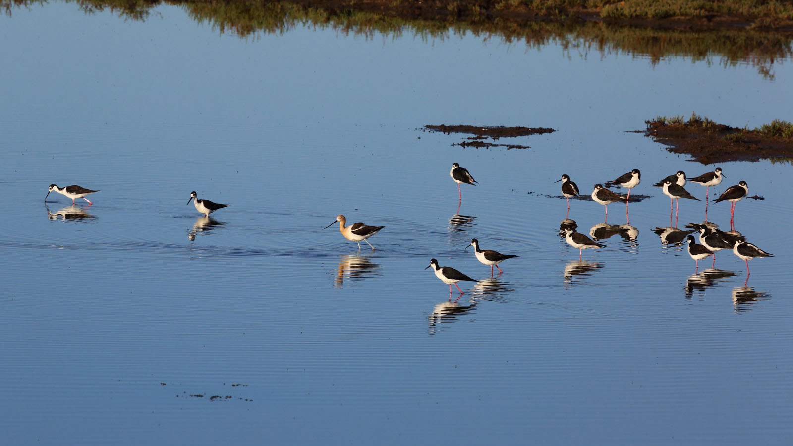
Some birds are at much greater risk than others.
Flickr/Don McCullough
If you've ever gazed out the window as your plane took off from John F. Kennedy International Airport, you've probably noticed the small islands and marshlands that run up to the runway's edge and stretch out to the southeast. That's the Jamaica Bay Wildlife Refuge, an internationally recognized Important Bird Area, and it plays home to thousands of waterfowl and flocking birds.
Don Riepe has loved birds ever since he was a kid, but he only became serious about birding in his early 20s. He became a park ranger at Jamaica Bay Wildlife Refuge in 1974. He left the job in 2003 for a position at the American Littoral Society, but he still spends much of his time looking for birds around Jamaica Bay.
So abundant is the bird population that the refuge has long been a "well-known hot spot for birders," says Riepe. "Even international birders, if they're in town on business or whatever, will stop here."
As far back as Riepe can remember, bird strikes have plagued air traffic at JFK. "Bird strikes have always been an issue," he says.
Since 1990, the first year for which data is available, 8,342 birds have been struck by plans taking off from or arriving at JFK. Some species, like the small and relatively rare yellow-throated warbler, have almost never had the misfortune of crossing paths with a plane. Others, however, have been less lucky.
Scroll through the slides below to see the thirteen bird species that have been struck most by planes at Port Authority airports (JFK, LaGuardia, Teterboro, Newark Liberty, Atlantic City and Stewart) since 1990.
The Unlucky Thirteen
Most Struck Bird Species at Port Authority Airports since 1990
#1 Herring Gull
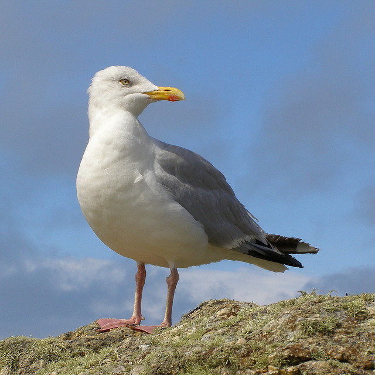
Strikes reported: 532
Herring gulls are the gray-and-white, pink-legged "seagulls." They're the most familiar gulls of the North Atlantic and can be found across much of coastal North America. Because they nest in area marsh lands year-round, they are particularly prone to being struck by local planes.
#2 American Kestrel
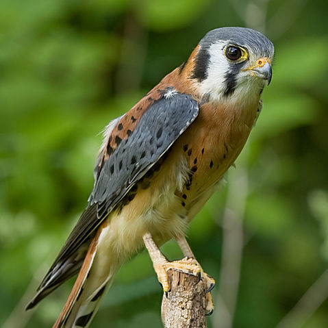
Strikes reported: 386
Sometimes called a sparrow hawk, the American Kestrel is actually a small species of falcon. This hearty predator can live just about anywhere, from the frigid climes north of the Arctic Circle down to the temperate tropics of Central America. It hunts over airports’ open spaces, seeking mice, lizards, grasshoppers and small birds.
#3 European Starling
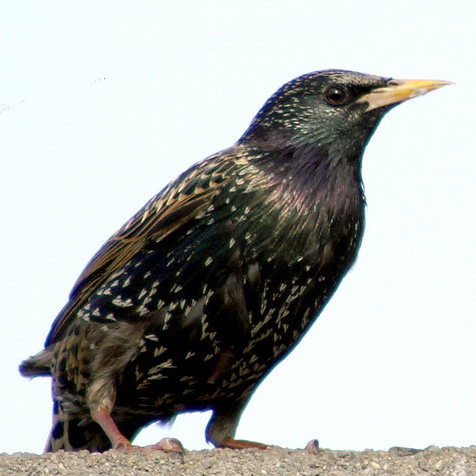
Strikes reported: 299
William Shakespeare noted the European Starling's uncanny knack for mimicry. A highly gregarious species, the Starling often flocks in massive groups of up to a million birds. Woe be to any plane unfortunate enough to cross their path.
#4 Barn Swallow
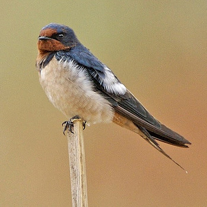
Strikes reported: 281
The Barn Swallow often cruises low, flying just a few inches above the ground or water. Its cup-shaped mud nests have recently been discovered around buildings at LaGuardia airport. Though the number of reported barn swallow strikes has increased dramatically in recent years, their small size prevents them from causing damage to planes.
#5 Laughing Gull
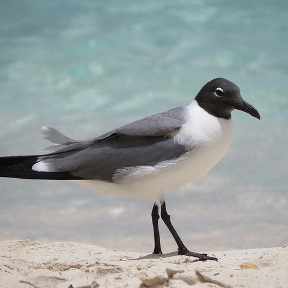
Strikes reported: 216
The Laughing Gull is a medium-sized gull known for its birdsong that sounds eerily humanlike. The first nesting pair was found next to the JFK runway in 1978. By 1990, the population had ballooned to 7,500 nesting pair.
#6 Rock Pigeon
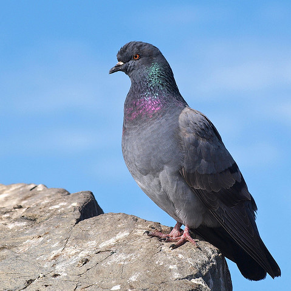
Strikes reported: 212
First introduced in America in 1606, the Rock Pigeon, usually just called a pigeon, are all-too-common across New York City. They feed in flocks and roost together on building ledges, making them a hazard for low-flying planes.
#7 Mourning Dove
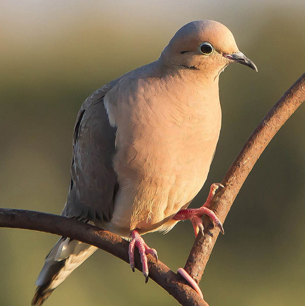
Strikes reported: 209
The FAA lists the Mourning Dove as the 17th most hazardous wildlife threat to aviation.
Even though it is small and lightweight, its flocking behavior has the potential to cause severe damage to an aircraft.
#8 Killdeer
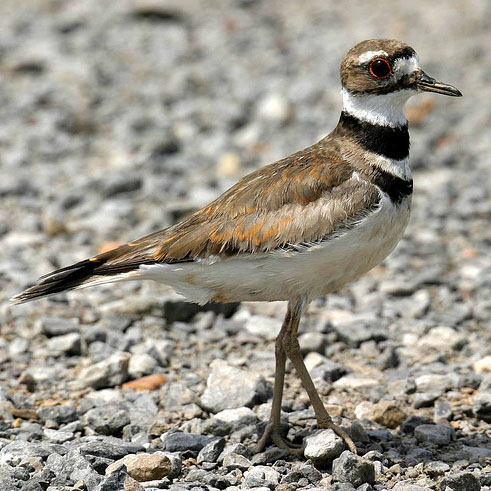
Strikes reported: 154
The Killdeer is an eight-inch shorebird so small its weight is measured in grams. It flies in large flocks, causing trouble to aircrafts.
#9 Ring-billed Gull
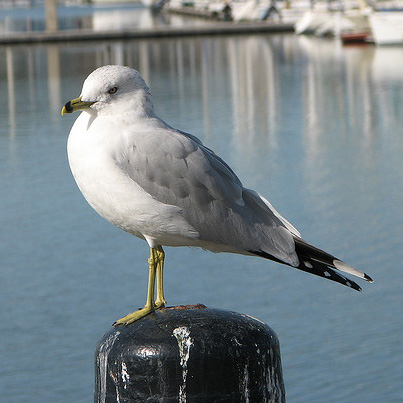
Strikes reported: 145
The Ring-billed Gull is comfortable around humans, and it frequents parking lots, garbage dumps, beaches, and fields, sometimes by the hundreds. They can be attracted to airports for several reasons, including precipitation, careless waste disposal and open water.
#10 Mallard
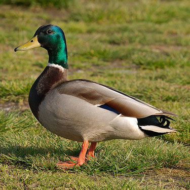
Strikes reported: 141
Mallards can be found throughout North America and Eurasia in ponds and parks as well as wilder wetlands and estuaries. The marshes surrounding New York's airports provide attractive nesting grounds for Mallards.
#11 Barn Owl
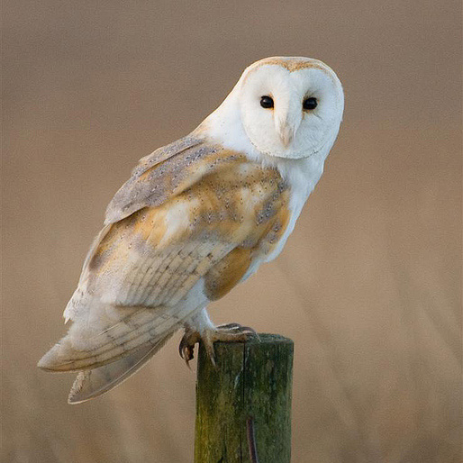
Strikes reported: 128
The Barn Owl is a silent predator of the night world, and it roosts in hidden, quiet places during the day. It stalks above airports' open fields, searching for prey.
#12 Eastern Meadowlark
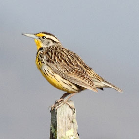
Strikes reported: 127
The sweet, lazy whistles of the Eastern Meadowlark waft over summer grasslands and farms in eastern North America. They can often be found flocking in the open spaces over airport runways.
#13 Canada Goose
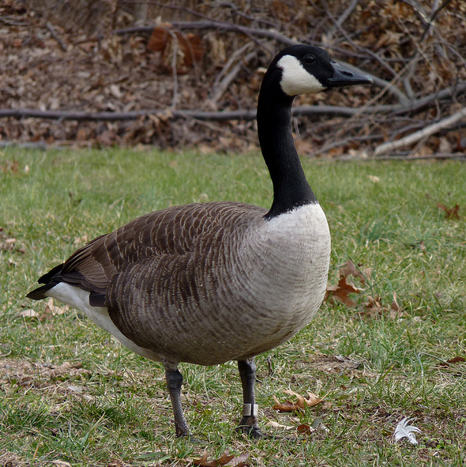
STRIKES REPORTED: 123
The Canada Goose, a migrating bird of North American and northern Europe, has seen a spike in population growth in recent years as its natural predators have been killed off. It is attracted to man-made bodies of water near food sources like those that surround area airports.
Like JFK, many of the area’s airports lie on land that was once marsh, making it ideal nesting grounds for waterbirds like Herring Hulls (#1), which inhabit the area year-round, and seasonal waterfowl like Laughing Gulls(#5), Ring-billed Gulls (#9), Mallards (#10) and Canada Geese (#13).
This results in a “great number of waterbirds” being mauled by low-flying aircraft, according to Tod Winston, a spokesman for the New York City Audubon Society.
Other factors increase the chances of certain species of birds succumbing to fast-flying planes. Some birds are attracted to airports’ open spaces, where predators like Barn Owls (#11) and American Kestrels (#2) – a small species of falcon – hunt for prey. Barn Swallows (#4), too, hunt for insects in open fields.
Birds like Starlings (#3), Killdeer (#8) and Eastern Meadowlarks (#12) that flock in large groups instead of flying solo are also likely to be killed in large numbers.
20,000 birds killed to protect passengers at NYC airports
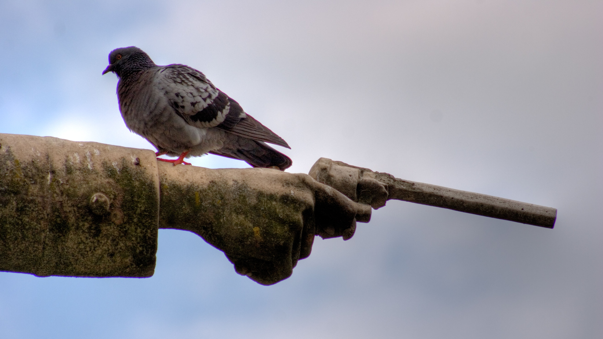
To protect airline passengers, the Port Authority kills thousands of birds.
Flickr/I Love Trees
To decrease the chances of a flock of birds colliding with turbines of landing and departing flights, New York’s Port Authority airports have explored a range of options. The Port Authority fires pyrotechnics into the sky to scare birds away from the airport, and instructs pilots to try to minimize the amount of time spent at altitudes where birds commonly fly. But the Port Authority also turns to a rather more old-fashioned approach: getting rid of the animals by shooting them with firearms.
Even for the most frequent of flyers, aware of airports’ efforts to use latest technologies to ensure their safety (for example, with full body scanners), this may come as surprising. And yet part of airports’ on-the-ground staff include trained marksmen - which the Port Authority describes as “Wildlife biologists” - whose job it is to kill birds or animals which may be hazardous to incoming or outgoing flights.
Earlier this year, the New York Post obtained a Freedom of Information request documenting the number and type of birds killed by the Port Authority in 2012-2013. The data also reveals the methods that “wildlife biologists” use to kill the animals.
Cody Baciuska, vice president at Loomacres Wildlife Management, an FAA approved wildlife management company, said the killing of birds is used as a last option when trying to mitigate the risk of aircraft bird strikes. “If a biologist needs to kill an animal,’ said Baciuska, “before he does so, he has to harass it 1000 times” in order to scare it away from the area. However, Baciuska notes, people’s safety comes first.
What’s immediately striking about the Port Authority data is the sheer number of the killings that occur nearly every day at each of New York’s busiest airports. For example, on certain days up to 250 animals are killed: July 13th, 2012, saw 258 Laughing Gulls shot by firearm at John F. Kennedy Airport, and October 16th, 2012, saw 138 Brown-headed Cowbirds killed at Newark Airport.
Aside from the startling rates of bird killings, further data analysis reveals interesting differences between the airport killing rates. A far more significant number of birds are killed at JFK compared to the other airports. Between 2012 and 2013, 14,865 animals were killed at JFK. This is nearly three times the total number killed at Newark, La Guardia, Teterboro and Stewart airports combined (5,444).
Bird Killings Heat Up During Summer Months
Number of Bird Killings at Port Authority Airports, 2012-2013
SOURCE: Federal Aviation Administration
Visualizing the data also revealed the seasonal pattern that affects the amount of birds flying within dangerous proximity of inbound and outbound flights. The chart above shows a very obvious peak in bird killings at JFK in July of each year.
Bird Cullers Prefer the Gun to the Gas
Animal Killings by Method, 2012-2013
SOURCE: Federal Aviation Administration
In terms of methods to eliminate problem-causing wildlife, birds are most commonly shot by firearm or euthanized. According to an article published in USA Today, euthanization entails herding up the birds into a pen and gassing them with carbon dioxide. As per the bar chart above, killing birds by firearm appears to be the far more popular method overall, but while killings by firearm dropped from around 11,500 in 2012 to around 5,000 in 2013, euthanization saw a slight increase of over 300 counts in 2013, from 1,780 in 2012.
Laughing Gulls Top List of Bird Victims
Bird Species Killed at Port Authority Airports, 2012-2013
SOURCE: Federal Aviation Administration
The final chart above, which shows the number of birds killed by species, reveals that laughing gulls are the number one bird type killed by airports’ wildlife biologists.
According to Don Riepe, Northeast Chapter Director of the American Littoral Society, a conservation organization, the first nesting pair of laughing gulls was found in the Jamaica Bay Wildlife Refuge in 1978. By 1990, there were 7,500 nesting pair right next to the JFK runways, which are located near marshlands - an ideal habitat for these types of birds.
In 1991, the Port Authority issued the first permit to kill the gulls. According to Reipe, in the first year alone, 14,000 gulls were killed, but this didn’t have a significant impact on the overall gull population. Today, there are about 2,500 nesting pair of Laughing Gulls yearly, with populations flourishing in the summer months, and between 2012 and 2013, nearly 6,000 Laughing Gulls were killed.
Bird strike roulette
What are the chances your next flight will hit a bird?
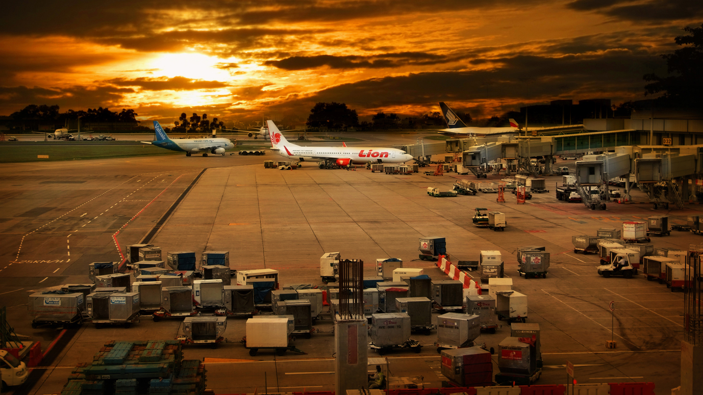
Bird strike rates vary greatly at airports across the country.
Flickr/William Cho
As air traffic has risen across the United States, so, too, have the frequency of bird strikes. But reported bird strike rates vary dramatically from airport to airport. At some airports, bird strikes are as common as a street pigeon. Elsewhere, they’re as rare as rare as a scaly-sided merganser.
A combination of factors determines the frequency with which planes hit birds. Because the Federal Aviation Administration does not require airports to report bird strikes, some tend to be more or less conscientious about reporting than others.
“The frequency of bird strikes may be higher at some specific airports such as JFK because these airports emphasize on strike reporting,” said Cody Baciuska, the vice president and co-founder at Loomacres Wildlife Management. “The wildlife hazard mitigation program at these airports are taking active roles. The total number of bird strikes is increasing, but the damaging rate is decreasing.”
In other cases, airports are located in the path of avian migratory routes or next to popular nesting grounds, increasing the odds of a bird strike.
The below map shows 85 of the country’s most trafficked passenger airports (military airports and flight schools tend to have much lower bird strike rates), color-coded according to their “bird strike rate,” defined as the number of bird strikes per 100,000 air movements (takeoffs and landings). The data is from the FAA for the year 2012.
Sacramento Leads Nation in Birdstrike Rate
Birdstrike Rates at Airports Across the U.S., 2012
SOURCE: Federal Aviation Administration
Sorry, but your screen is too small to view the map.
Sacramento International Airport in California had the highest bird strike rate in 2012. With a total of 153 reported bird strikes and 115,829 movements, the airport recorded a chart-topping bird strike rate of 132.1. Airport officials stress that they report bird strikes far more diligently than the average airport, which partially accounts for the higher frequency.
Furthermore, three full-time wildlife biologists work to make the airport’s land less attractive to birds by cutting grass, removing standing water and scaring birds away. “We’re doing everything we can to minimize the attractiveness in the most important phases of flights, which are landing and takeoffs,” said Glen Rickleton, an environment planning manager at the Sacramento County department of airports.
But as with so many things, when it comes to bird strikes, what matters above all is location, location, location. Sacramento International is nestled in the northern pocket of California’s central valley, one of the country’s most productive agricultural regions. The Sacramento area is home to thousands of acres of rice fields that, when flooded, provide an ideal habitat for several species of migratory waterfowl.
“That’s not typical for a lot of airports. We get a lot of migratory waterfowl coming through, and not just flying through, but also landing and using the land around the airport,” said Julie Car, an environmental planner and wildlife biologist for the Sacramento Country department of airports.
Rickleton has spoken with the California Rice Commission about ways to make surrounding farms less attractive to birds, including irrigating rice fields bit by bit rather than flooding the whole field at once. But it’s been an uphill battle.
“We don’t have the authority to tell a farmer that’s been doing this for however many decades, to tell them to do it differently. It’s a sensitive issue when you start talking about that sort of thing, but we do our best,” he said. "Ultimately, he added, “We don’t get into telling farmers how to farm,” he added.
Though bird strikes have caused emergency landings at the airport, Sacramento International has been spared the severely damaging accidents like the 2009 strike that forced a U.S. Airways plane to make an emergency landing on the Hudson River. “We have never had anything catastrophic like that or anything close to that,” Rickleton said. “That’s a really important distinction to make.”
Indeed, Richard Dolbeer, a science advisor at U.S. Department of Agriculture, said bird strike rates in general are less of a concern as the number of strikes that result in damage. “Bird strikes per se are not a risk, but bird strikes with large or flocking species that cause damage or a negative effect on flight are a risk,” he said.
According to an FAA report, only two percent of the reported bird strikes during the past two decades caused substantial damage, and less than one percent destroyed the aircrafts. Sometimes, pilots may not even realize they hit a bird. “These strikes include ‘carcass found’ strikes where airport operations find carcasses or remains of birds on airport runways that are suspected to have been hit by aircraft but no strike was actually reported,” Dolbeer said.
{kind=link}